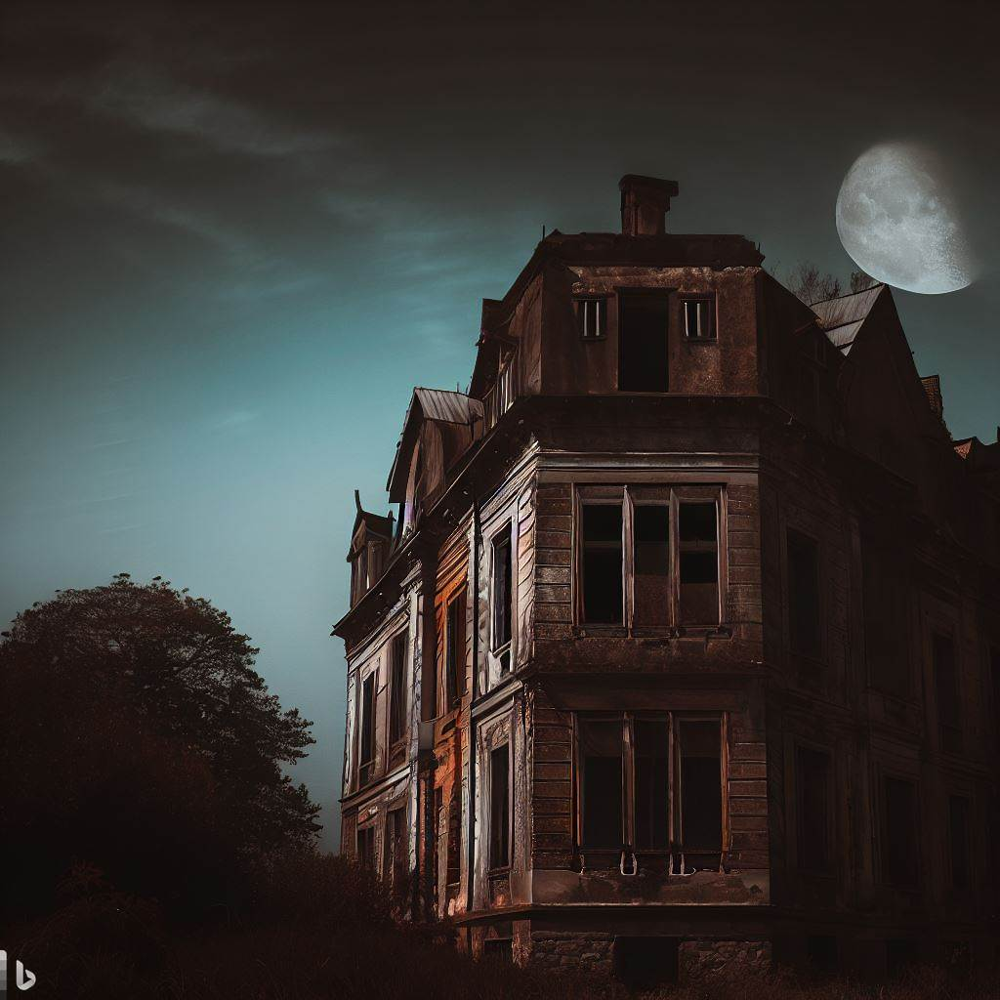

Introducción
Inicio
Nuestros nombres son Gina Lupano y Franco Magnarelli, les vamos a
mostrar nuestro proceso del ultimo trabajo practico de Tecno 1.
El cuento que elegimos para nuestra aventura grafica es "En la noche" de Ray Bradbury,
una historia muy impactante y oscura que transcure en un edificio.
Proceso
Inicio
Elegimos realizar esta aventura gráfica con este cuento porque el cuento se nos hizo mas entretenido que
"Farenheit", que era nuestra otra opción. En cuanto al minijuego que debía ser parte de
la aventura, también contabamos con dos opciones: la Viborita o el Donkey
Kong.
Optamos por quedarnos con esta ultima opcion ya que pensamos que lo podiamos adaptar mejor a la aventura.
El trabajo cuenta con 17 pantallas navegables incluido el juego. En cuanto a la programacion, contamos
con un total de 10 clases.
La realización del trabajo no se nos dificultó tanto ya que contabamos de antes con las bases del juego
y del cuento, previamente realizados durante el año. A lo que tuvimos que hacer hincapié fue en
encontrar la vuelta para conectar a ambos dentro del mismo codigo.